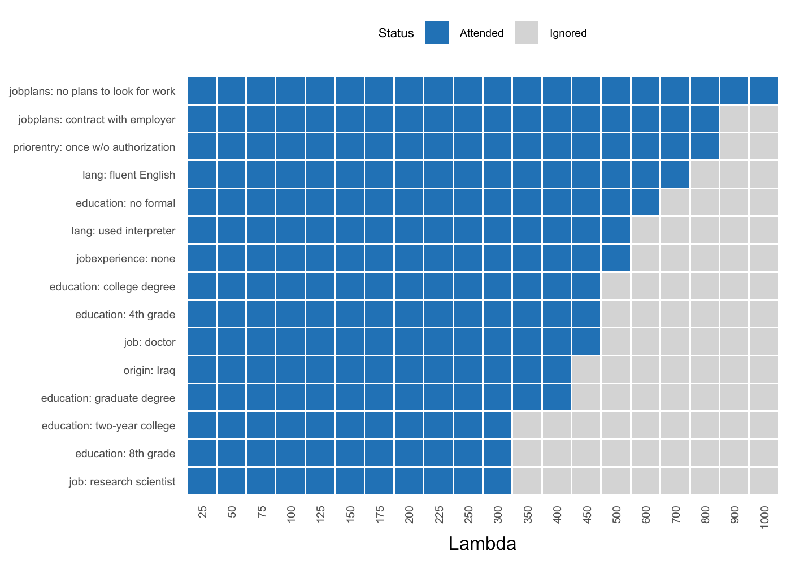
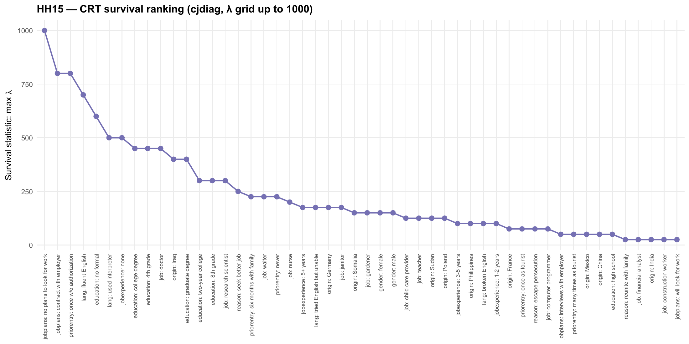

Tools for attribute-level importance and attendance in conjoint survey experiments — which attribute levels drive choices, how they rank, and which ones respondents ignore.
Why cjdiag?
Standard conjoint analysis tools (cjoint, cregg) estimate what respondents prefer — Average Marginal Component Effects (AMCEs) and marginal means. But they cannot tell you how respondents decide: which attributes they actually attend to or which attribute levels they ignore entirely.
cjdiag fills this gap with five diagnostic methods that reveal the decision process behind conjoint choices.
Installation
# Install from GitHub (CRAN submission pending)
# install.packages("pak")
pak::pak("dkarpa/cjdiag")Quick Start
library(cjdiag)
data(immig)
rf <- cj_fit(
Chosen_Immigrant ~ Gender + Education + LanguageSkills +
CountryofOrigin + Job + JobExperience + JobPlans +
ReasonforApplication + PriorEntry,
data = immig,
method = "forest"
)
rf
#> Conjoint Random Forest
#> ======================
#>
#> Resolution: levels
#> Trees: 500
#> OOB Error: 40.3%
#> Observations: 2,000
#> Attributes: 9
#> Levels: 50
#>
#> Top 10 levels by MDA:
#>
#> # A tibble: 10 × 7
#> rank attribute level mda root_pct class_0 class_1
#> <int> <chr> <chr> <dbl> <dbl> <dbl> <dbl>
#> 1 1 JobPlans no plans to look for wo… 13.5 15.4 12.3 7.25
#> 2 2 JobPlans contract with employer 8.18 11.2 3.70 6.98
#> 3 3 Education no formal 7.87 7.4 8.04 2.38
#> 4 4 PriorEntry once w/o authorization 7.42 10.4 6.87 3.66
#> 5 5 LanguageSkills fluent English 6.16 8.2 2.71 6.00
#> 6 6 PriorEntry once as tourist 4.83 2.4 1.61 5.25
#> 7 7 Education college degree 4.75 6.4 0.153 6.16
#> 8 8 LanguageSkills used interpreter 4.66 5.6 4.91 1.37
#> 9 9 CountryofOrigin Iraq 4.15 4.6 3.53 2.15
#> 10 10 Job janitor 3.87 3 2.09 3.36The full results table is the main output. Each row is one attribute level. The columns:
- rank — position in the importance ordering. Rank 1 = the level that does the most work in driving choices.
- attribute — the conjoint attribute (the question the level answers, e.g. what is this immigrant’s reason for applying?).
- level — the specific value of that attribute (e.g. escape persecution).
-
mda — Mean Decrease in Accuracy. How much the forest’s predictive accuracy drops when the information in this level is shuffled away. Higher = this level genuinely shapes choices. Levels with
mdanear zero are effectively ignored. - root_pct — % of trees in the forest where this level is the first split. A high value means respondents tend to start their decision by checking this level. This is the gatekeeper signal.
- class_0 — how strongly this level pushes respondents to reject a profile. A “veto” signal.
- class_1 — how strongly this level pushes them to select a profile. An “attractor” signal.
The asymmetry between class_0 and class_1 reveals direction. class_0 ≫ class_1 means the level is a deal-breaker (e.g. no plans to look for work mostly causes rejection). class_1 ≫ class_0 means the level is a draw (e.g. fluent English mostly causes selection).
knitr::kable(
head(rf$results, 20)[, c("rank", "attribute", "level", "mda",
"root_pct", "class_0", "class_1")],
digits = 2
)| rank | attribute | level | mda | root_pct | class_0 | class_1 |
|---|---|---|---|---|---|---|
| 1 | JobPlans | no plans to look for work | 13.48 | 15.4 | 12.33 | 7.25 |
| 2 | JobPlans | contract with employer | 8.18 | 11.2 | 3.70 | 6.98 |
| 3 | Education | no formal | 7.87 | 7.4 | 8.04 | 2.38 |
| 4 | PriorEntry | once w/o authorization | 7.42 | 10.4 | 6.87 | 3.66 |
| 5 | LanguageSkills | fluent English | 6.16 | 8.2 | 2.71 | 6.00 |
| 6 | PriorEntry | once as tourist | 4.83 | 2.4 | 1.61 | 5.25 |
| 7 | Education | college degree | 4.75 | 6.4 | 0.15 | 6.16 |
| 8 | LanguageSkills | used interpreter | 4.66 | 5.6 | 4.91 | 1.37 |
| 9 | CountryofOrigin | Iraq | 4.15 | 4.6 | 3.53 | 2.15 |
| 10 | Job | janitor | 3.87 | 3.0 | 2.09 | 3.36 |
| 11 | CountryofOrigin | Mexico | 3.34 | 0.2 | 1.41 | 3.47 |
| 12 | CountryofOrigin | Germany | 3.00 | 0.2 | 3.24 | 1.05 |
| 13 | LanguageSkills | broken English | 2.99 | 0.2 | -0.38 | 4.60 |
| 14 | JobPlans | will look for work | 2.84 | 0.0 | 2.04 | 1.55 |
| 15 | Job | doctor | 2.22 | 1.4 | 2.26 | 0.93 |
| 16 | PriorEntry | six months with family | 2.13 | 1.4 | 0.58 | 2.29 |
| 17 | LanguageSkills | tried English but unable | 1.90 | 0.4 | 2.28 | 0.26 |
| 18 | ReasonforApplication | reunite with family | 1.86 | 0.2 | 0.04 | 2.58 |
| 19 | Gender | male | 1.67 | 0.6 | 0.56 | 1.86 |
| 20 | ReasonforApplication | escape persecution | 1.45 | 1.0 | -2.40 | 4.24 |
Decision Tree
tr <- cj_fit(
Chosen_Immigrant ~ Gender + Education + LanguageSkills +
CountryofOrigin + Job + JobExperience + JobPlans +
ReasonforApplication + PriorEntry,
data = immig,
method = "tree"
)
plot(tr)
Nested Marginal Means
nmm <- cj_fit(
Chosen_Immigrant ~ Gender + Education + LanguageSkills +
CountryofOrigin + Job + JobExperience + JobPlans +
ReasonforApplication + PriorEntry,
data = immig,
method = "nmm",
resp_id = "CaseID",
n_boot = 0
)
plot(nmm, type = "cumulative", top_n = 20)
CRT Lambda-Survival
The CRT survival statistic — the largest L1 penalty at which a level’s coefficient is still nonzero — gives a one-number attendance ranking. Below, fit to HH15 with a grid up to 1000.
crt <- cj_fit(
Chosen_Immigrant ~ Gender + Education + LanguageSkills +
CountryofOrigin + Job + JobExperience + JobPlans +
ReasonforApplication + PriorEntry,
data = immig,
method = "crt",
lambda_grid = c(seq(25, 250, 25), seq(300, 500, 50), seq(600, 1000, 100))
)
plot(crt, type = "survival", top_n = 15)

Methods
All methods are accessed through a single function: cj_fit(formula, data, method).
| Estimand | method = |
Question | Output | Behavioural assumption | When to use |
|---|---|---|---|---|---|
| Level importance | "forest" |
Which attribute levels matter most? | MDA, root-split rate per level | None — non-parametric | Default. Always fit this first. |
| Decision structure | "tree" |
How do respondents structure their decisions? | Hierarchical CART splits | Lexicographic / sequential | When you suspect a gatekeeper. |
| Level attendance | "crt" |
Which levels survive a strict signal-vs-noise test? | Lambda-survival, attended/ignored | Sparsity (most levels are noise) | When you want a hard attendance test. |
| Decision order | "nmm" |
In what order do levels settle choices? | Decisiveness ranking, cumulative % | Sequential elimination (EBA) | When you care about the decision order. |
| Individual attendance | "marginal_r2" |
Which attributes did each respondent actually use? | Per-respondent R² matrix | Per-respondent simple-regression fit | When you want individual-level heterogeneity. |
Plot Customization
All plot methods return ggplot2 objects and accept customization parameters:
# Colorblind-safe palette
plot(rf, palette = "colorblind")
# Rename attributes in display
plot(rf, attribute.names = c(LanguageSkills = "English Proficiency"))
# Full ggplot2 theme override
plot(rf, theme = ggplot2::theme_classic(base_size = 14))Three palettes available: "default", "colorblind" (Okabe-Ito), "grey".
Set defaults once with set_cjdiag_theme() and set_cjdiag_labels().
Related Packages
cjdiag is complementary to packages that estimate AMCEs and design conjoint experiments:
- cjoint — AMCE estimation (Hainmueller, Hopkins & Yamamoto)
- cregg — AMCE and marginal means with tidy output
- projoint — full conjoint pipeline
- cbcTools — conjoint experiment design and power analysis
Run cjoint or cregg for AMCEs, then cjdiag to diagnose how respondents actually made those choices.
Getting Started
For a full walkthrough, see the Getting Started vignette. Each method has its own task-oriented vignette: forest, tree, nmm, marginal_r2, crt.
Citation
citation("cjdiag")Um Paket 'cjdiag' in Publikationen zu zitieren, nutzen Sie bitte:
Karpa D (2026). _cjdiag: Diagnostic Tools for Conjoint Survey
Experiments_. R package version 0.2.1,
<https://github.com/dkarpa/cjdiag>.
Ein BibTeX-Eintrag für LaTeX-Benutzer ist
@Manual{,
title = {cjdiag: Diagnostic Tools for Conjoint Survey Experiments},
author = {David Karpa},
year = {2026},
note = {R package version 0.2.1},
url = {https://github.com/dkarpa/cjdiag},
}Funding
David Karpa acknowledges financial support from the European Research Council (ERC) under the European Union’s Horizon Europe research and innovation programme — project AGAPP “Algorithmic Governance – A Public Perspective” (ERC Starting Grant, grant agreement No. 101116772, PI: Prof. Daria Gritsenko), where he works as a postdoctoral researcher.